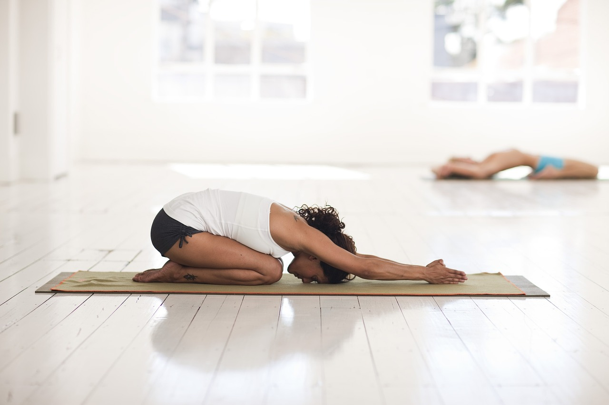
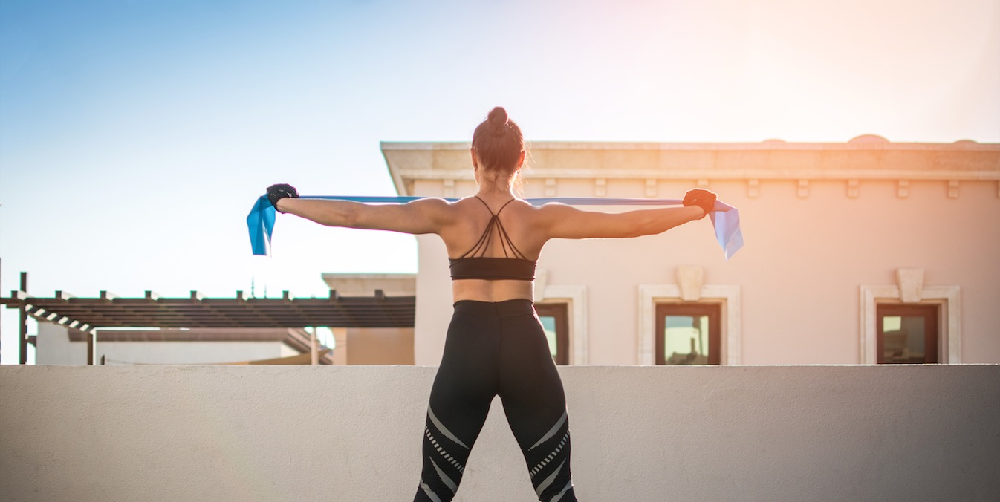
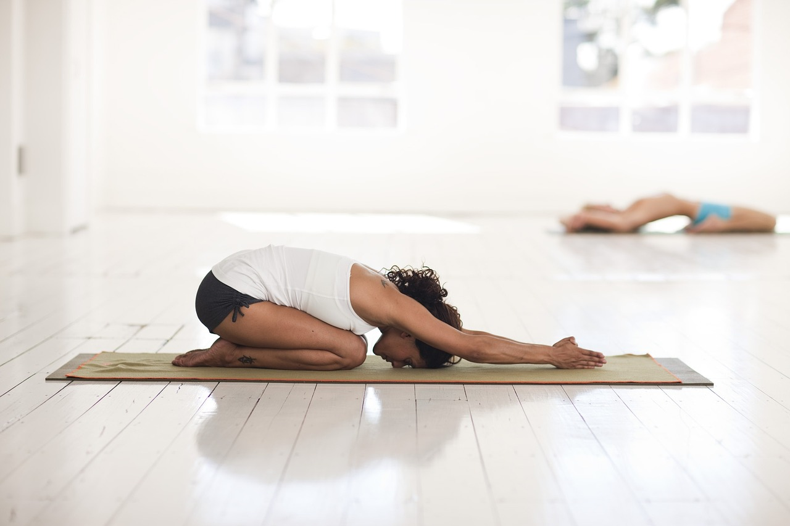
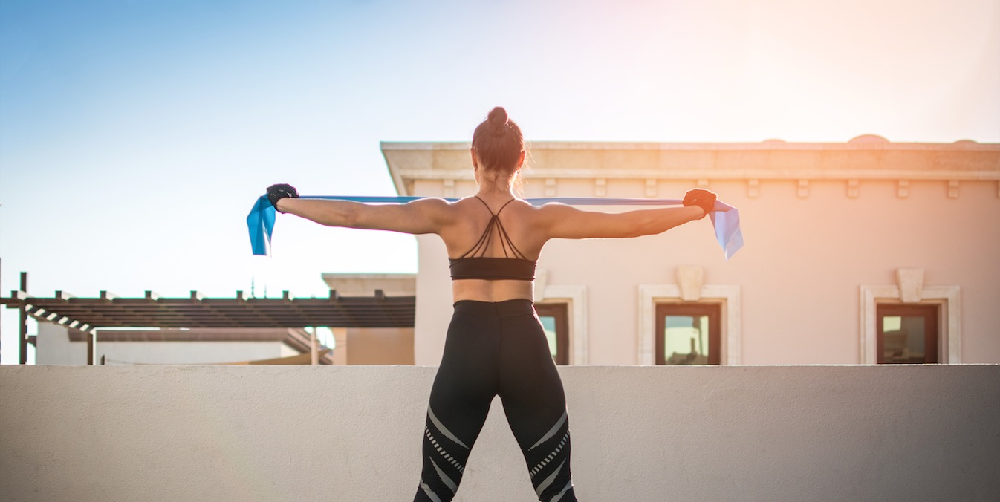

- Bridges: This exercise helps the core and back muscles.
- Yoga poses: Many yoga poses focus on strengthening your core and back. Some favorites include the child pose.
- Pull-aparts: Using resistance bands or weights, you can increase your upper back strength.
 


